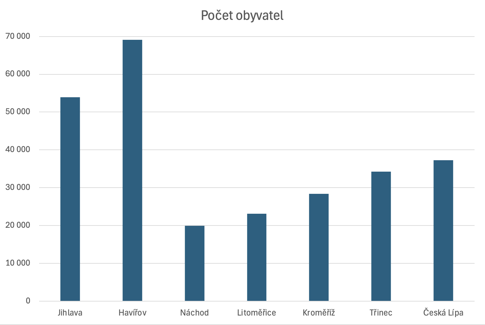

V této hodině se podíváme na třídění dat a jejich čtení z grafu. Nakonec si zkusíme čtení z jízdního řádu. Cílem bude data vyhledávát a také se naučit data jednoho typu převést do dalšího.
Vyčti nebo odhadni z grafu kolik obyvatel v daném městě bydlí. Přetáhni poté pole s názvem této obce na osu.
Na mapě, kterou najdete pod odkazem níže vyhledej, do kterého kraje dané město spadá. Spoj tyto dvojice. Pozor na mapě nejsou napsané názvy jednotlivých krajů, doporučuju si mapu s názvy najít někde jinde.
Odkaz na mapu
V následujícím úkolu budeme pracovat s jízním řádem. Tvým úkolem je si jízdní řád pročíst a doplnit data do textu pod jízdním řádem.